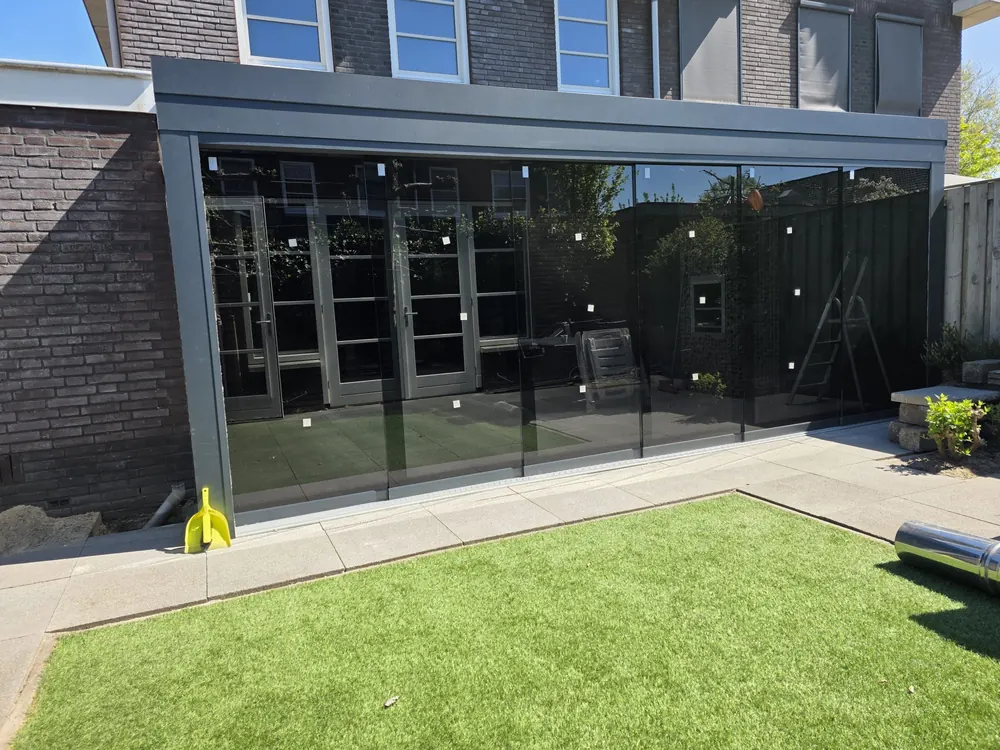
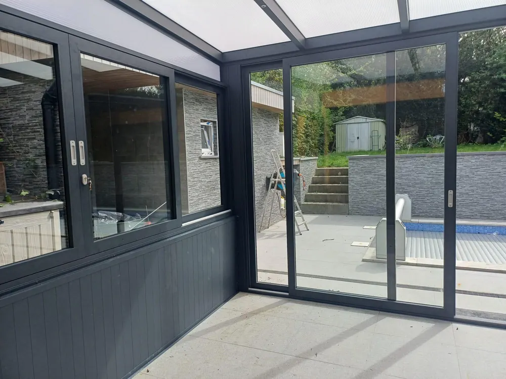
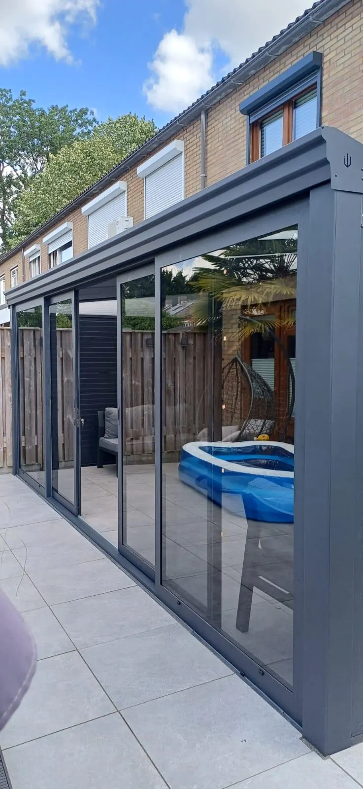
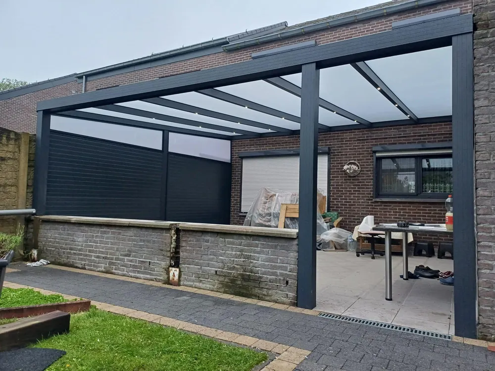
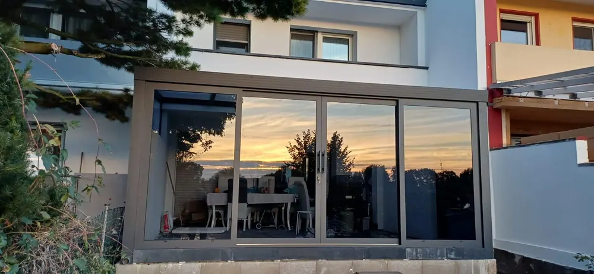
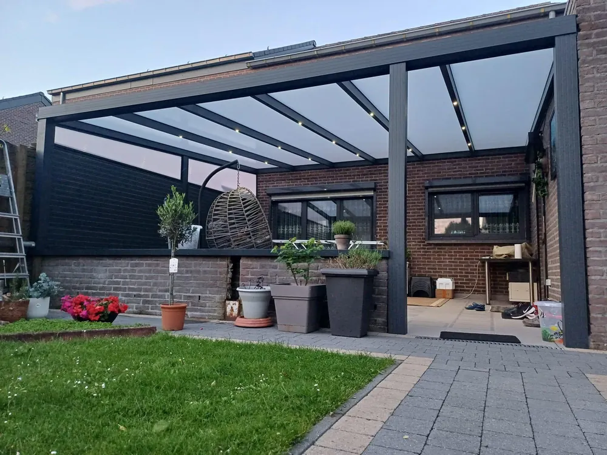
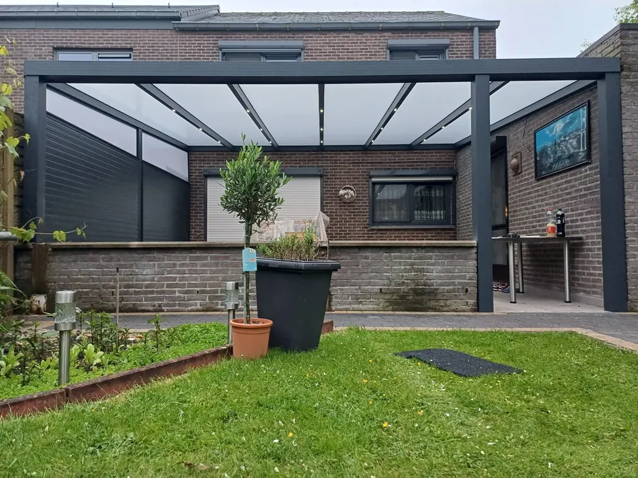
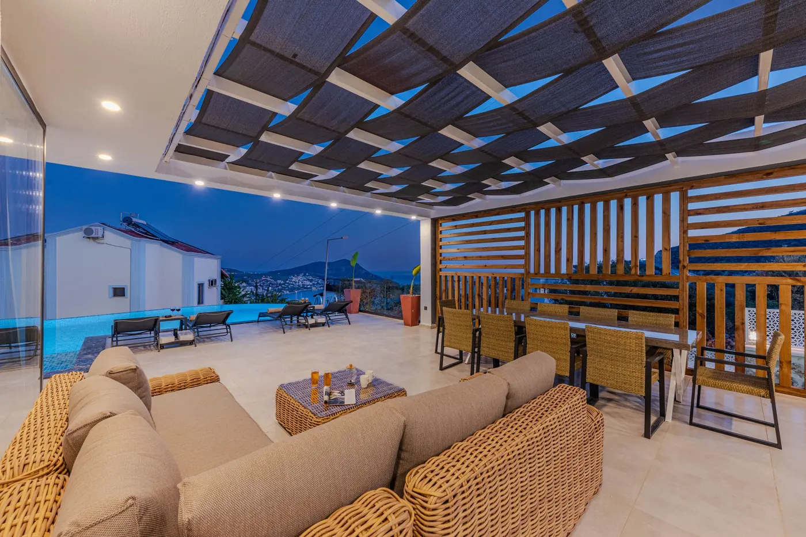

Projecten
Ruim 1.500 tuinen gingen je voor
Een greep uit ons werk. Elke foto is een echte klus van ons eigen team.














Veranda's op maat in Nederland en België, sinds ruim 15 jaar

Projecten
Een greep uit ons werk. Elke foto is een echte klus van ons eigen team.







Thema VerandaHallo! Wil je weten wat jouw veranda kost, of heb je een vraag? Stuur ons gerust een bericht.
Chat openen